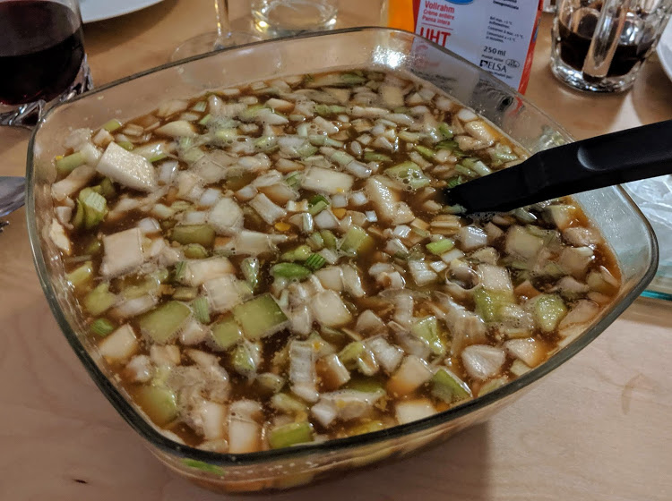

Okrochka

Pour 4 personnes :
- Un peu moins d'un litre de kvas
- Un peu de crème fraîche épaisse
- Deux œufs
- Deux grosses knacks (ou 4-5 petites)
- Un petit concombre
- Une petite vingtaine de radis
- Un ou deux oignons blancs, suivant leur taille
- Deux ou trois belles branches d'aneth
- Cuire les œufs dix minutes pour en faire des œufs durs, et en profiter pour faire cuire les knacks. Attendre que ça refroidisse.
- Laver les légumes et l'aneth. Couper le concombre, les radis, les knacks, les blancs d'œuf et les oignons blancs en petits cubes. Les mettre dans un saladier, ajouter l'aneth coupé en bouts de 1cm environ, et saler généreusement.
- Dans chaque bol/assiette, écraser une moitié de jaune d'œuf avec une petite cuillère à soupe de crème fraîche.
- Verser le kvas, mélanger pour faire partir toutes les bulles, déguster frais. On peut même rajouter des glaçons si ça n'est pas assez frais.
Remarque : la première voyelle se prononce à mi-chemin entre le a et le o, plus porté sur le « a ».
Remarque 2 : c'est à peu près impossible de trouver du Kvas en dehors d'Europe de l'Est, en faire soi-même est faisable et ne coûte presque rien, mais prend un peu de temps.
Retour à la liste des recettes